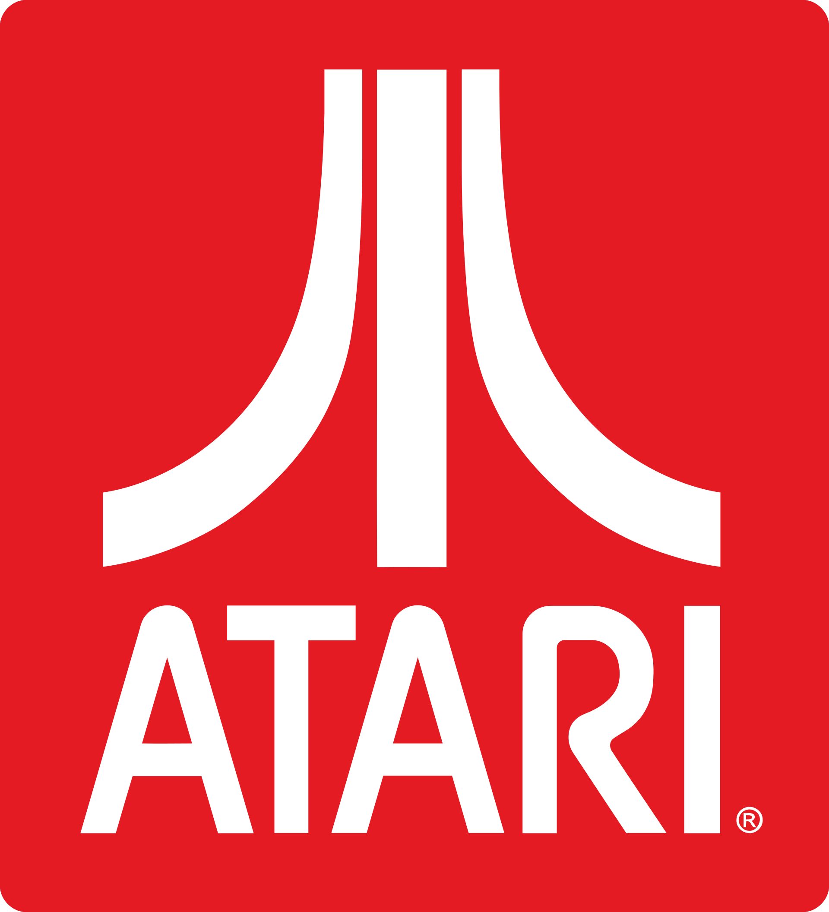

 Ankit @ankit - 2h
Atari (/əˈtɑːri/) is a brand name that has been owned by several entities since its inception in 1972. It is currently owned by French publisher Atari SA through a subsidiary named Atari Interactive.[1][2][3] The original Atari, Inc., founded in Sunnyvale, California, in 1972 by Nolan Bushnell and Ted Dabney, was a pioneer in arcade games, home video game consoles and home computers. The company's products, such as Pong and the Atari 2600, helped define the electronic entertainment industry from the 1970s to the mid-1980s.
Reply 123 Retuit 234 Like 345 Share Bob @bob - 4h
Bob @bob - 4h
Manchester United Football Club, commonly referred to as Man United (often stylised as Man Utd), or simply United, is a professional football club based in Old Trafford, Greater Manchester, England. The club competes in the Premier League, the top division in the English football league system. Nicknamed the Red Devils, it was founded as Newton Heath LYR Football Club in 1878, but changed its name to Manchester United in 1902. The club moved from Newton Heath to its current stadium, Old Trafford, in 1910.
Reply 123 Retuit 234 Like 345 Share